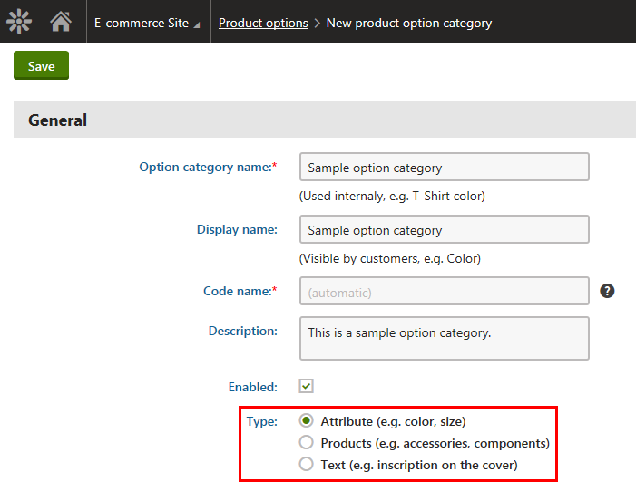
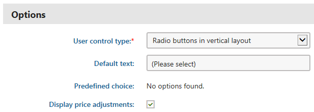
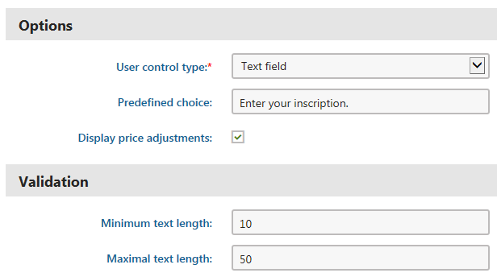
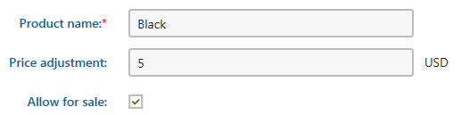
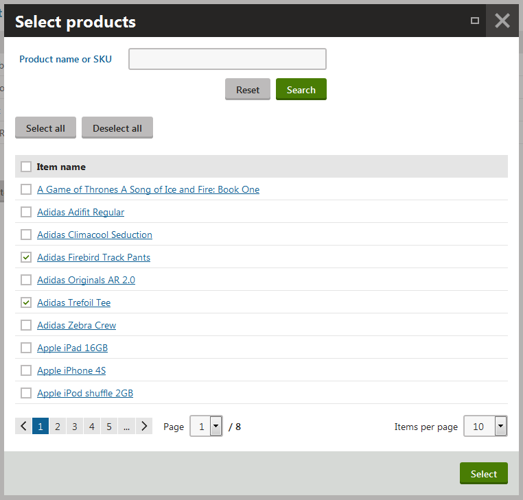
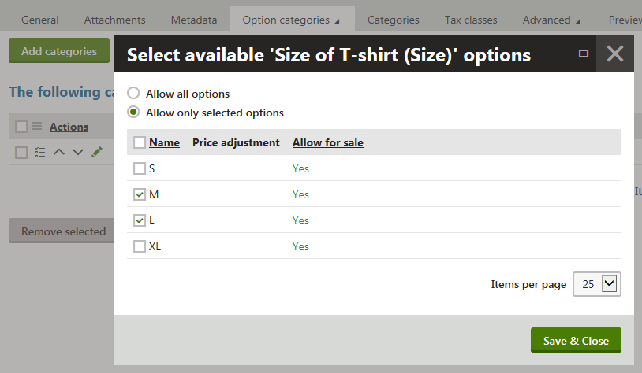
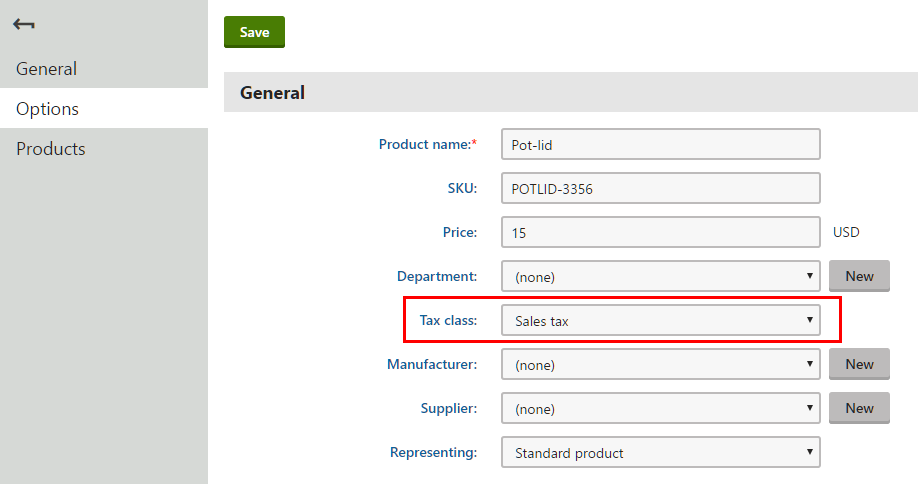

Creating and modifying product options
Creating product options
Each product option in the Kentico E-commerce Solution belongs to a product option category. To be able to use product options, you first need to create product option categories.
Creating product option categories
You can create product option categories in the Product options application.
Click New product option category.
Enter category properties in the General category.
Based on your selection of the type of the category, the system displays more properties in the Options category.Attribute – the options represent product attributes, e.g., product's different colors or sizes.
Products – the options represent separate products that your customers can optionally purchase together with the main product, e.g. you can offer PCs with printers as options. Options in this category can also represent components of a product, e.g. hardware components of a configurable PC.
Text – the options allow your customers to purchase products with optional texts. For example, you can offer books with inscriptions.

Available product option typesClick Save.
The system displays the Options category.
Enter category properties in the Options category.
Options category available for the Attribute and Products type option categories:
Options category available for the Text type option category:

Editing properties available for the Text type option category
Click Save.
The system creates an empty product option category of the selected type. You can now add product options to the category.
Creating product option categories while editing products
You can also create product option categories in the Products application while editing products on the Options -> Option categories tab.
Click New category.
Enter category properties (see Step 2 through Step 4 in this section).
Click Save and close the dialog.
If you create a product option category this way, the category is automatically assigned to the respective product.
Adding product options to product option categories
You can add product options only to product option categories of the Attribute and Products types.
This is because categories of the Text type contain only one option, which the system adds automatically.
You can add new product options to existing product option categories in the Product options application.
Select a product option category and click Edit (
 ).
).Switch to the Options tab.
Perform the corresponding action:
Click New option if you are adding a new option to a category of the Attribute type.
Click New product if you are adding a new option to a category of the Products type.
Enter option properties.
Adding a product option to a category of the Attribute type:

Adding a product option to a category of the Attribute typeAdding a product option to a category of the Products type:

Adding a product option to a category of the Products type
Click Save
(Optional) Click Save and create another instead if you want to create more than one option.
The system adds product options to the given category. You can now use the options in your on-line store. For example, you can add the options to selected products, modify options' properties, etc.
Adding product options to product option categories while editing products
You can also add product options to product option categories in the Products application while editing products on the Options -> Option categories tab.
Select a product option category and click Edit category properties (
).Switch to the Options tab .
Perform the corresponding action, i.e., New option or New product.
Enter option properties (see Step 4 in this section).
Click Save and close the dialog.
(Optional) Click Save and create another instead if you want to create more than one option.
Adding product options to products
In Kentico, you cannot add product options to your products directly. If you want to use options for your products, you must add to each product at least one (non-empty) option category. Later you can specify that the system should use only selected options from the assigned categories (applies to Attribute and Products categories only) for the products. Otherwise, the system uses all options from these categories.
Adding product option categories to products
You can add product option categories to products in the Product options application.
Select a product option category and click Edit (
).Switch to the Products tab.
Click Add products to open the Select products dialog.
Select the required products.
Click Select.
The system adds the current product option category to the selected products including all product options contained in the category. You can now specify which options from this category the system should use for the products.
Adding product option categories to products while editing products
You can also add product option categories to products in the Products application while editing products on the Options -> Option categories tab.
Adding product option categories to multiple products at once (while editing a product)
Select a product option category and click Edit category properties (
).Switch to the Products tab.
Click Add products to open the Select products dialog.
Select the required products.
Click Select.
The system adds the current product option category to the selected products including all product options contained in the category.
Adding multiple product option categories to the currently edited product
Click Add categories to open the Select product option categories dialog.
Select the required categories.
Click Select.
The system adds the selected product option categories to the currently edited product including all product options contained in the categories.
Adding a new product option category to the currently edited product
Click New category.
Enter category properties.
Click Save and close the dialog.
The system assigns the new option category (empty) to the currently edited product. Now you need to add some options to this category.
Selecting available options for products
You can specify available options for products while editing the products in the Products application.
Select a product and click Edit (
).Switch to the Options -> Option categories tab.
Select a product option category (if available) and click Select available options (
 ).
).The system opens a dialog where you can specify available options for the product.

Selecting available options(Optional) If the system doesn't offer any product option category for the product, you can add some by clicking Add categories.
(Optional) If the system doesn't offer any product option category for the product, you can add a new category by clicking New category.
Select the options as required.
Allow all options – the system offers all product's options from the current category to the users.
Allow only selected options – the system offers only selected products' options from the current category to the users.
It is recommended to select Allow only selected options and select some or all options. If you do so, you can then add more options to the option category and it will not have any effect on already created products and their options (the products will be offered with their specified options).
However, if you select Allow all options, any new option added to the option category will be also offered for the already created products.
Click Save & Close .
The system now offers only those product options which were specified for the product.
Applying taxes to product options
The Kentico E-commerce Solution allows you to specify which taxes should apply to product options that belong to product option categories of the Products type.
Product options from other category types (Attribute and Text) use tax classes assigned to the main products.
This means the options use tax classes assigned to the products with which you offer them.
You can add taxes to product options in the Product options application.
Edit (
) a product option category of the Products type.Switch to the Options tab.
Edit (
) a product option.Select the desired tax class in the Tax class field.

Selecting tax classesClick Save.
The system adds the taxes to the product option. When your customers purchase products with this option, the system applies the selected taxes to the option.
Applying taxes to product options while editing products
You can also apply taxes to product options in the Products application while editing products on the Options -> Option categories tab.
Edit (
) a product option category of the Products type.Switch to the Options tab.
Edit (
) a product option.Select the desired tax class in the Tax class field.
Click Save.
Modifying product options
You can modify product options in the Product options application.
Select the product option category that contains the option you want to modify and click Edit (
).The system opens the category's General tab where you can modify option category properties.
Switch to the Options tab.
Select a product option and click Edit (
).Modify product option properties as required.
Click Save.
You can now use the product option (product option category) with its updated settings.
You can also modify product options in the Products application while editing products on the Options -> Option categories tab.